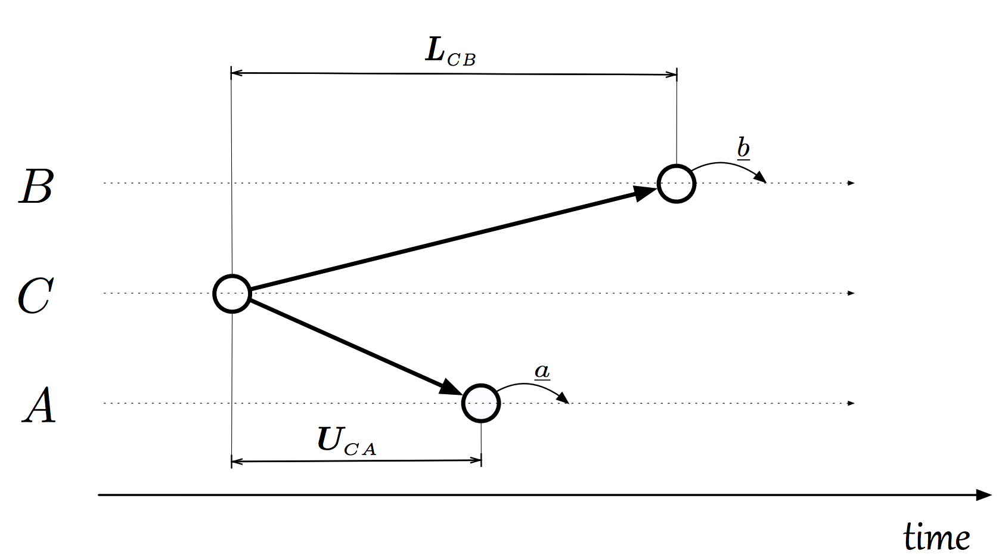
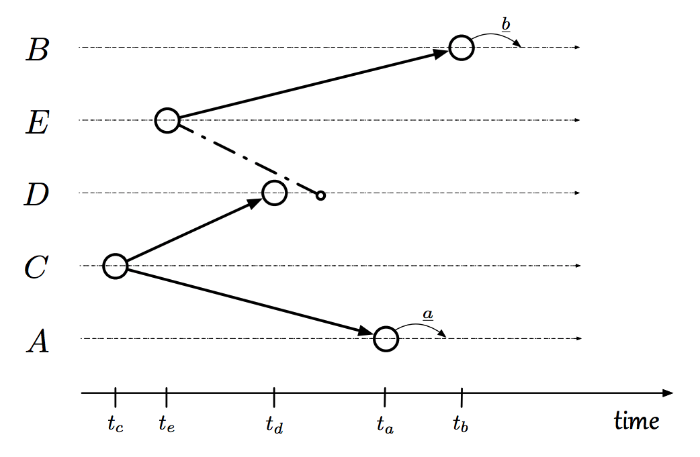

There are a couple different ways to model communication in a distributed system. One one extreme is the asynchronous model where we assume that messages can be delayed arbitrarily. On the other extreme is the synchronous model where we assume that all processors in the distributed system execute in lockstep. This paper introduces a new communication model, the bounded communication model without clocks, that sits between the two extremes. The authors then describe necessary and sufficient communication patterns for ensuring that two events take place at least a duration $x$ apart.
This paper introduced the bounded communication model without clocks, also dubbed the clockless model. In this model, every channel between a pair of processors has an upper and lower bound on the time it takes to send a message over the channel. That’s convenient. Also, processors do not have a local clock which means they cannot wait for any amount of time. That’s inconvenient.
Now assume that a process $A$ is going to perform an event $a$. Process $B$ wants to perform an event $b$, but only after $A$ performs $a$. How can we guarantee that $b$ takes place after $a$?
One way to guarantee it is to have $A$ perform $a$ and then send a message to $B$. Upon receiving this message, $B$ performs $b$. This works in the clockless model (and in the asynchronous model). Are there any other situations in which we can guarantee that $B$ performs $b$ after $A$ performs $a$?
Yes! Assume a process $C$ sends a message to both $A$ and $B$. Upon receiving this message, $A$ performs $a$. Upon receiving this message, $B$ performs $b$. If the upper bound on the link $CA$ is less than the lower bound on the link $CB$, then $b$ is guaranteed to happen after $a$. This is illustrated below:

Also note that the scenario in which $A$ sends a message to $B$ is really just a special case of the image above in which $A = C$.
Okay, but are there any other situations? Yes. The image below shows that we can have a zigzag like communication. If certain inequalities between upper and lower bounds are met, then we can guarantee that $b$ happens after $a$ (see paper for details).

Okay okay, but are there any other situations? No! This paper shows the only way to guarantee that $b$ follows $a$ by at least a duration $x$ (or $b$ precedes $a$ by at least a duration $x$) is for there to be a zigzag communication like the one pictured above. That is, zigzag communication is both sufficient and necessary.
We formalize the clockless model as follows. We represent a network as a graph $(\textsf{Procs}, \textsf{Chans})$ where $\textsf{Procs} = \set{1, \ldots, n}$ consists of $n$ processors. We have functions $L, U: \textsf{Chans} \to \nats^+$ that give an upper and lower bound for each channel.
A global state $g = (l_e, l_1, \ldots, l_n)$ consists of a state $l_e$ for the environment (e.g. message buffers and whatnot) and local states $l_i$ for each of the processors. We assume that local state $l_i$ encode every message received, every action taken, and every message sent by processor $i$.
A run $r$ is an infinite sequence of global states where transitions between global states occur from processors receiving a message, performing an action, or sending a message. Notably, processors cannot spontaneously execute an action after some desired amount of time (i.e. no clocks); transitions only happen because of message delivery.
A basic node $\sigma = (i, l)$ is a pair of a processor and a local state. In a given run $r$, $l$ may only appear in one contiguous region for $i$. We let $\textsf{time}_r(\sigma)$ be the first time at which $l$ appears for $i$. We use basic nodes as a proxy for points in time in the clockless model.
The paper also defines general nodes $\theta$ which are very important for the rest of the paper. See paper for details.
The paper shows that zigzag communication is both necessary and sufficient for a system to guarantee that an event $b$ occurs before or after an event $a$ by a specified duration $x$. Thus, in order for a processor $B$ to decide whether or not it can safely execute $b$, it must know whether or not there is a zigzag communication. The paper defines when a process knows about a zigzag communication. In short, the heads of the zigzags must causally precede the point at which $B$ decides whether to execute $b$.